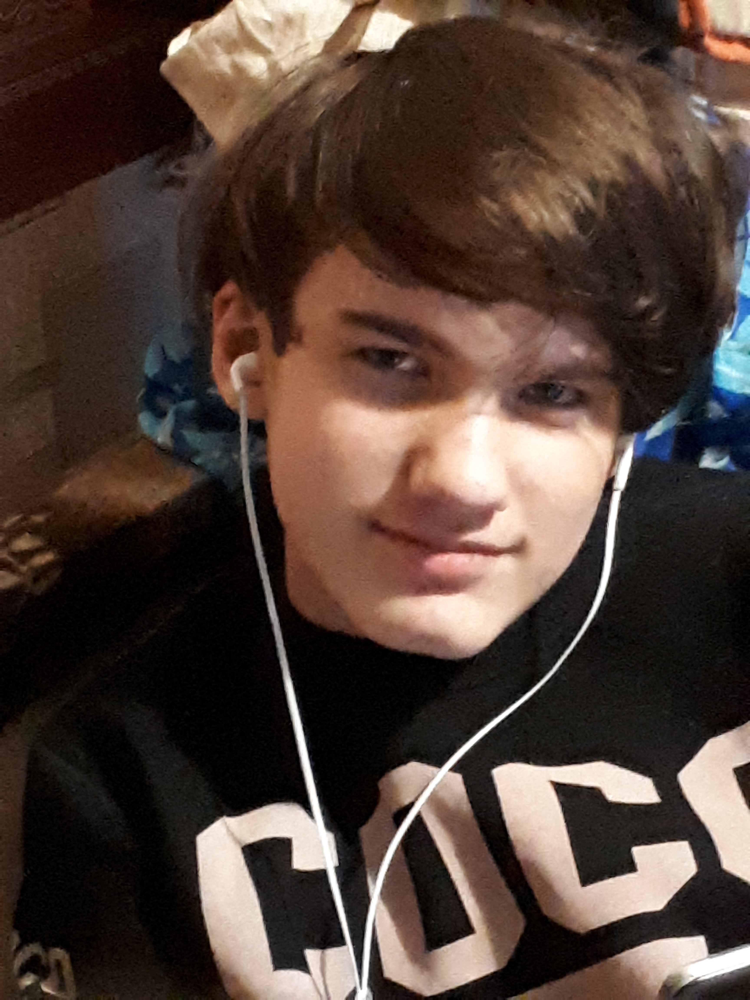

Меня зовут: Сергей Мирошниченко
Родился: 02 02 2007
Проживаю: г. Иваново
По знаку зодиака: Водолей
Учусь в 6Б классе СШ №56
Курсы: Прохожу обучение в образовательном центре "ЮНИУМ" курс "Сайтостроение"
Увлечения и хобби: Создание компьютерных игр, 3Д моделирование, проссмотр аниме, рисование, являюсь основателем фурри-фэндома в нашем городе.
Планы: Учусь играть на муз. инструменте укулеле, фурсьют-мастеринг.
По характеру: Миролюбивый, коммуникабельный, позитивынй.